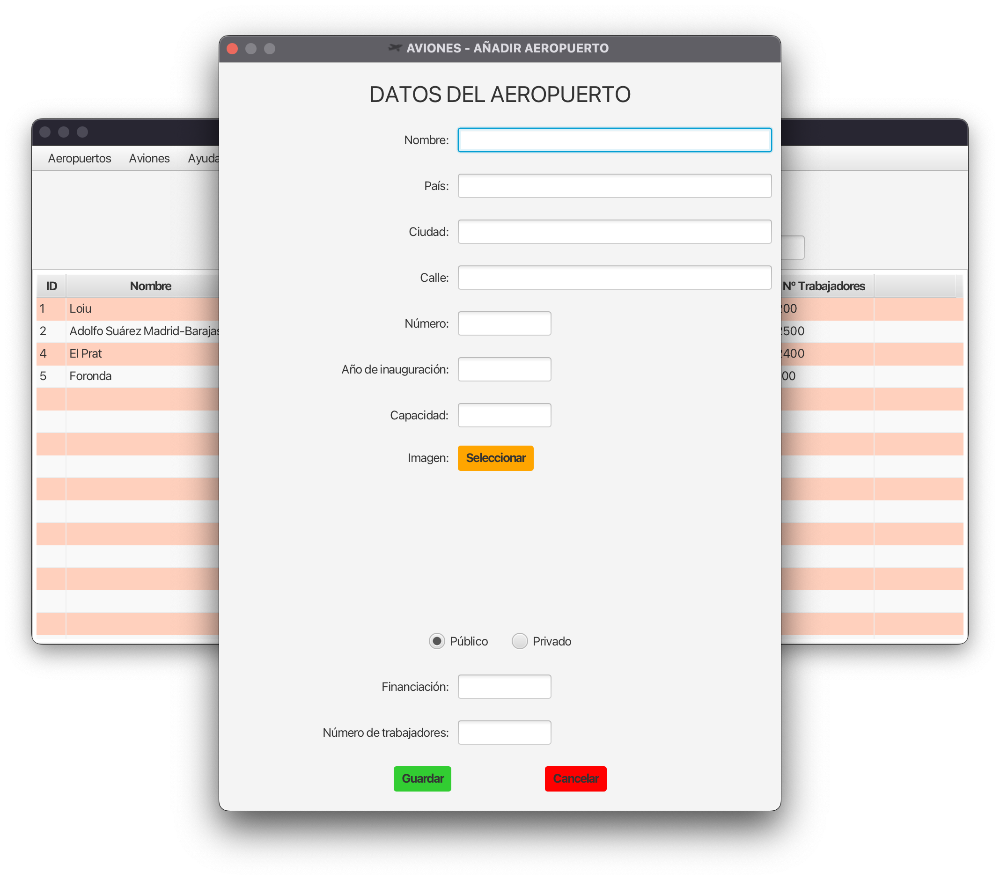
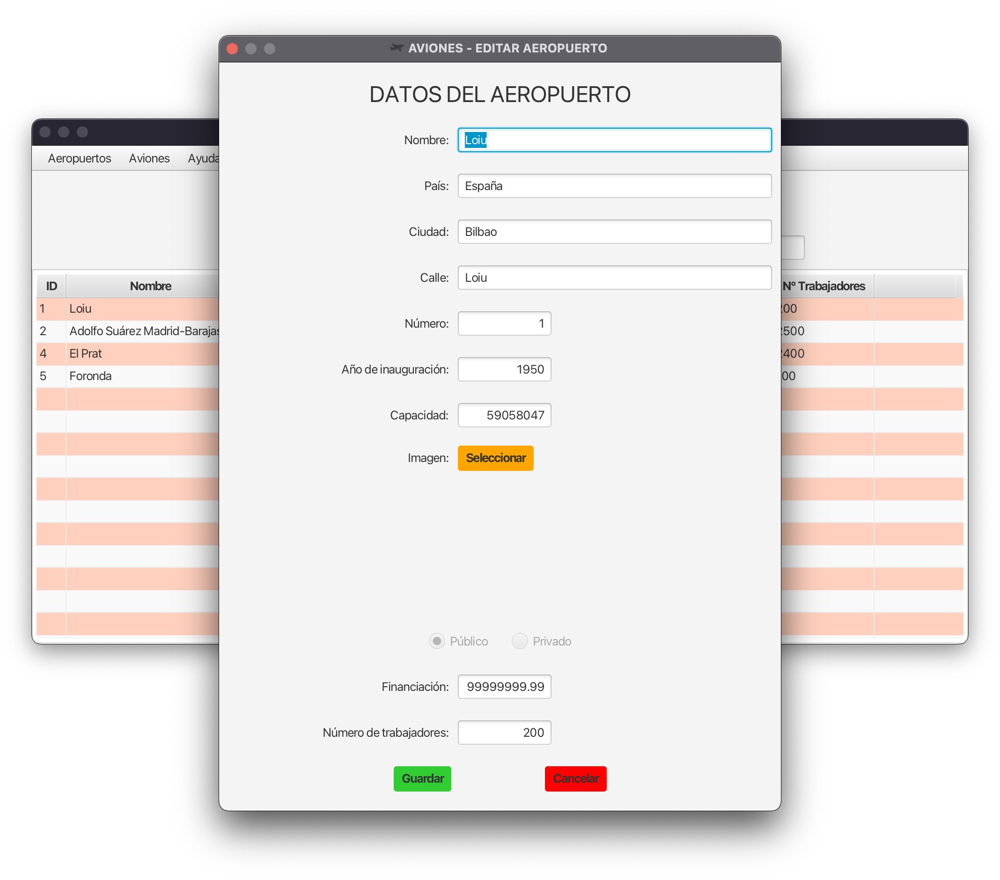
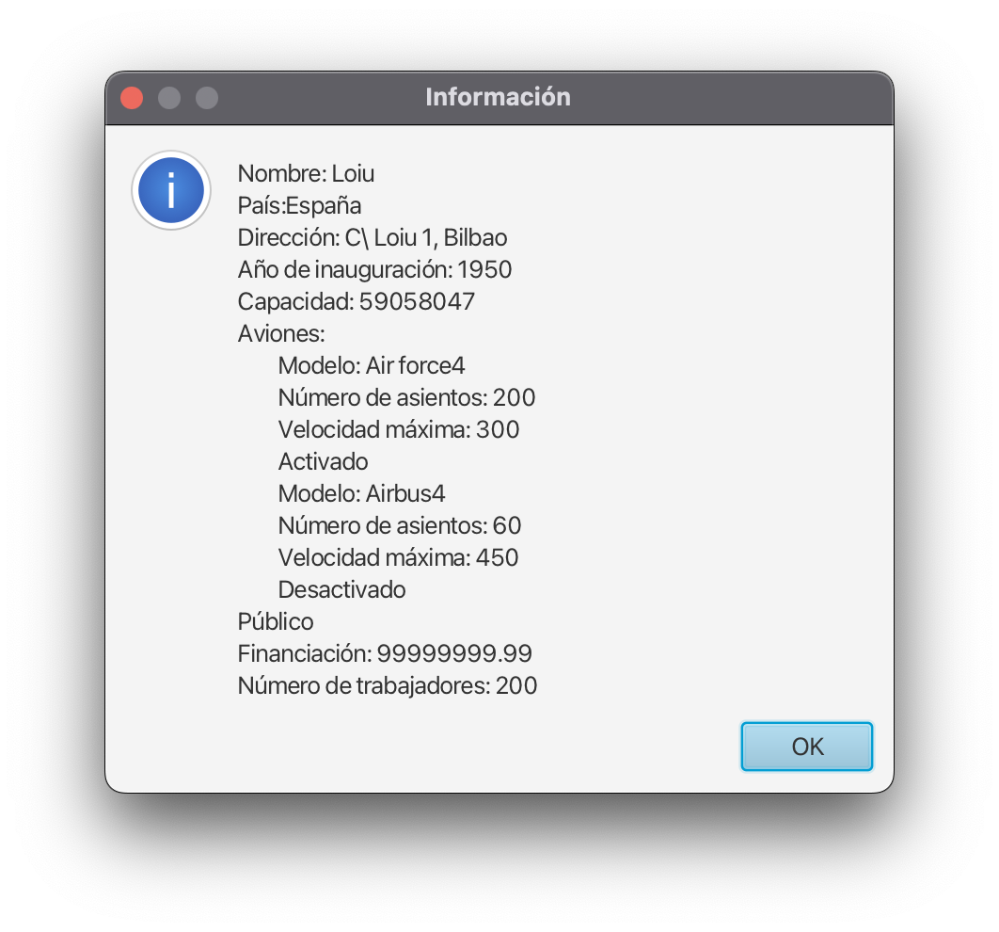

Gestión de Aeropuertos
Añadir Aeropuertos
- Haga clic en el botón "Añadir Aeropuerto" en la sección "Aeropuertos".
- Rellene los campos del formulario con la información del nuevo aeropuerto.
- Seleccione si el aeropuerto es público o privado.
- Haga clic en el botón "Guardar" para guardar la información del nuevo aeropuerto.

Editar Aeropuertos
- Seleccione un aeropuerto de la tabla y haga clic en el botón "Editar Aeropuerto" en la sección "Aeropuertos".
- Rellene los campos del formulario con la información del aeropuerto a editar.
- Haga clic en el botón "Guardar" para guardar la información del aeropuerto.

Eliminar Aeropuertos
- Seleccione el aeropuerto que desea eliminar de la tabla.
- Haga clic en el botón "Borrar Aeropuerto" para eliminar el aeropuerto seleccionado.
Visualizar la Información de un Aeropuerto
- Seleccione un aeropuerto de la tabla y haga clic en el botón "Mostrar informacion" en la sección "Aeropuertos".
- Se mostrará una nueva vista con la información del aeropuerto seleccionado.
Ejemplo de Información
